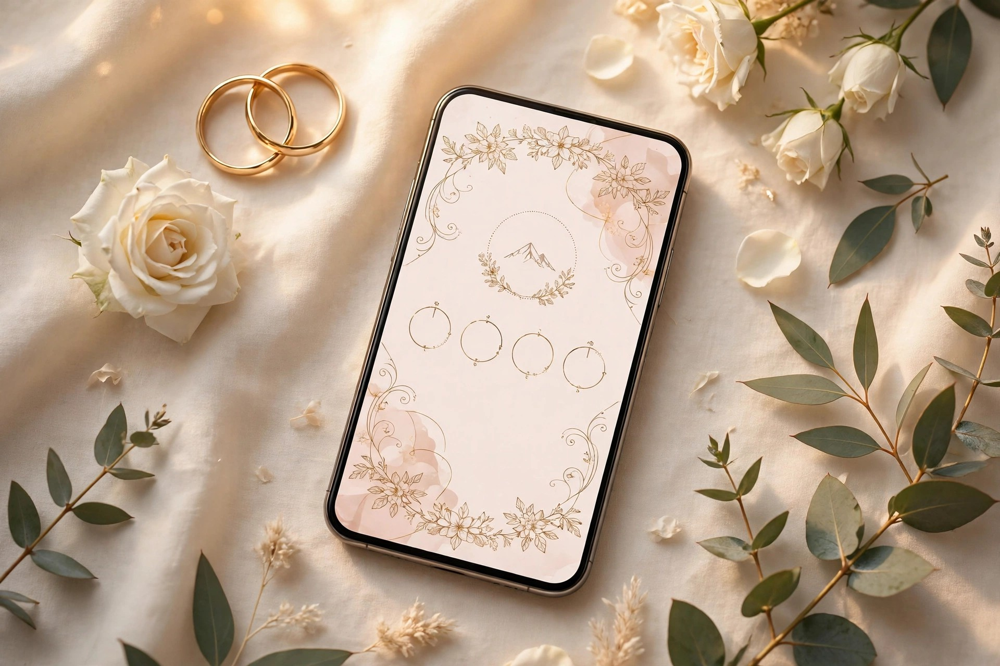

Akad Nikah
Minggu, 20 Desember 2026
08.00 – 10.00 WIB
Gedung Serbaguna
Jakarta
Undangan Pernikahan
Minggu, 20 Desember 2026
Kepada Yth.
Bapak/Ibu/Saudara/i
Tamu Undangan
Mohon maaf apabila terdapat kesalahan penulisan nama dan gelar.
بِسْمِ اللَّهِ الرَّحْمَٰنِ الرَّحِيمِ
وَمِنْ آيَاتِهِ أَنْ خَلَقَ لَكُم مِّنْ أَنفُسِكُمْ أَزْوَاجًا لِّتَسْكُنُوا إِلَيْهَا وَجَعَلَ بَيْنَكُم مَّوَدَّةً وَرَحْمَةً ۚ إِنَّ فِي ذَٰلِكَ لَآيَاتٍ لِّقَوْمٍ يَتَفَكَّرُونَ
"Dan di antara tanda-tanda (kebesaran)-Nya ialah Dia menciptakan pasangan-pasangan untukmu dari jenismu sendiri, agar kamu cenderung dan merasa tenteram kepadanya, dan Dia menjadikan di antaramu rasa kasih dan sayang. Sungguh, pada yang demikian itu benar-benar terdapat tanda-tanda (kebesaran Allah) bagi kaum yang berpikir."
— QS. Ar-Rūm: 21
Assalamu'alaikum Warahmatullahi Wabarakatuh
Dengan memohon rahmat dan ridha Allah SWT
Dengan penuh syukur, kami bermaksud mengundang Bapak/Ibu/Saudara/i untuk hadir dan memberikan doa restu pada pernikahan kami:
Raka
&
Sinta
Raka Pratama, S.Kom.
Putra Bapak H. Bambang & Ibu Sari
Sinta Maharani, S.E.
Putri Bapak H. Agus & Ibu Dewi
Minggu, 20 Desember 2026

Menuju akad nikah, Minggu 20 Desember 2026 pukul 08.00 WIB.
Minggu, 20 Desember 2026
08.00 – 10.00 WIB
Gedung Serbaguna
Jakarta
Minggu, 20 Desember 2026
11.00 – 14.00 WIB
Gedung Serbaguna
Jakarta
Alamat lengkap menyusul pada undangan cetak. Tautan di atas membuka pencarian lokasi di Google Maps.
Kami akan sangat senang apabila Bapak/Ibu/Saudara/i hadir dengan busana berikut:
Batik / Formal — nuansa Navy & Gold
Tiga potongan dari satu foto mockup undangan — cincin, kartu undangan, dan mawar putih. Ketuk foto untuk memperbesar.
Perjalanan singkat kami hingga hari bahagia ini.
2019
Kami pertama kali bertemu di sebuah acara kampus. Dari obrolan singkat tentang tugas akhir, berlanjut menjadi pertemanan yang tak pernah putus.
2022
Di hadapan kedua keluarga, Raka meminang Sinta dengan sederhana namun penuh makna. Air mata bahagia menjadi saksi hari itu.
2026
Dengan restu kedua orang tua, kami melangkah ke jenjang pernikahan — awal dari perjalanan panjang kami berdua.
Mohon konfirmasi kehadiran Anda. Pesan akan terkirim melalui WhatsApp ke nomor mempelai.
Kehadiran dan doa Anda sudah merupakan hadiah terindah. Bagi yang berkenan memberikan tanda kasih, kami sediakan:
DANA
0812-3456-789
a.n. Raka & Sinta
Bank BCA CONTOH
1234 5678 90
a.n. Raka Pratama
Rekening BCA di atas adalah NOMOR CONTOH — ganti dengan nomor rekening asli mempelai sebelum dibagikan. Lihat README.md.
Keluarga Besar
Bapak H. Bambang & Ibu Sari
Keluarga Besar
Bapak H. Agus & Ibu Dewi
Bapak H. Slamet Riyadi & Ibu Ratna
Bapak Drs. H. Ahmad Fauzi & Ibu Nurhayati
Keluarga Besar Bapak H. Mahmud
Merupakan suatu kehormatan dan kebahagiaan bagi kami beserta keluarga apabila Bapak/Ibu/Saudara/i berkenan hadir dan memberikan doa restu kepada kedua mempelai.
Semoga Allah SWT memberkahi pernikahan kami dan mengumpulkan kami dalam kebaikan. Aamiin.
Raka & Sinta
Minggu, 20 Desember 2026